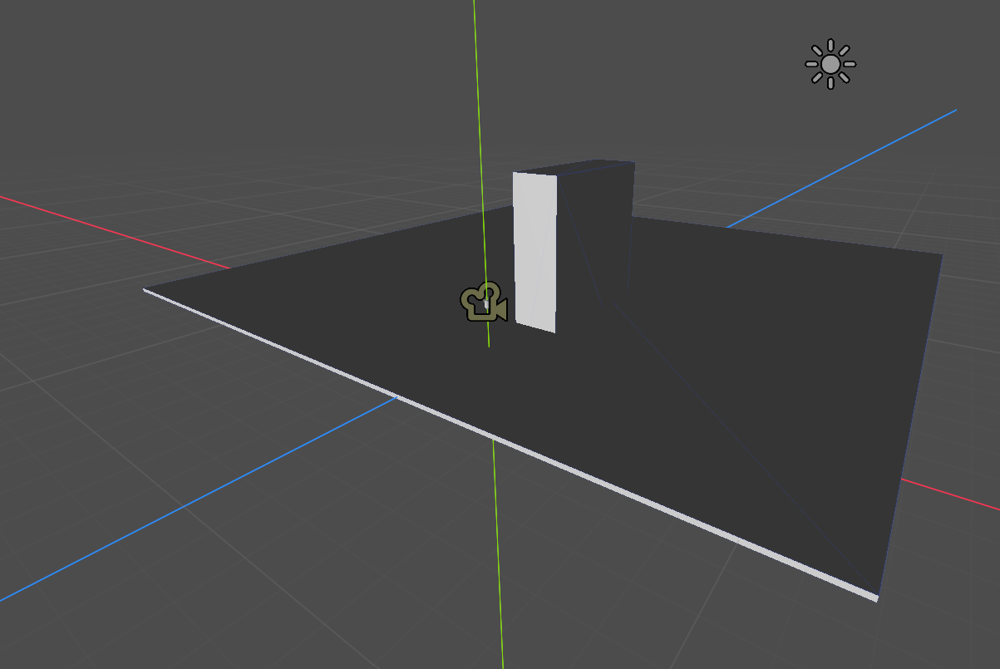

Day 1: Throwing at the Wall
The first day of a game jam is always quite hectic and exciting. After everyone arrives at the event, the theme is soon revealed as "Charge". Such a theme can be interpreted in many, many different ways, and so long as the game includes "Charge" in some aspect, it is a valid interpretation.
Our group, formed by 3 members of TinjTeam, set off by discussing possible ideas for what we would make. Many ideas were thrown around, such as a hamster racing game, or a more electricity themed shooter game. In the end, we ended up choosing to make a simple but fun 3D jousting game, where you could charge up over time to get faster and faster. With such time constraints, scope management is incredibly important to skirt the time limit.
With the idea out of the way, we began a project in Godot and created the initial scenes, naming it UmaTwo. This was also our first time working with 3D!
